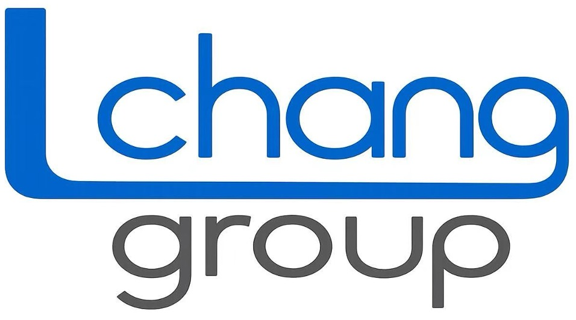

<script>
document.addEventListener("DOMContentLoaded", function () {

  const tocLinks = document.querySelectorAll("#TOC a");
  const sections = [];

  tocLinks.forEach(link => {
    const href = link.getAttribute("href");

    if (href && href.startsWith("#")) {
      const section = document.querySelector(href);

      if (section) {
        sections.push({
          link: link,
          section: section
        });
      }
    }
  });


  // Custom TOC click positioning
  document.addEventListener("click", function (e) {

    const link = e.target.closest('#TOC a[href^="#"]');

    if (!link) return;

    const href = link.getAttribute("href");
    const target = document.querySelector(href);

    if (!target) return;

    // Prevent Quarto's own TOC scrolling
    e.preventDefault();
    e.stopPropagation();
    e.stopImmediatePropagation();

    const targetY =
      target.getBoundingClientRect().top +
      window.scrollY -
      window.innerHeight * 0.30;

    window.scrollTo({
      top: targetY,
      behavior: "smooth"
    });

    history.replaceState(null, "", href);

  }, true);


  function updateTOC() {
    let current = null;

    sections.forEach(item => {
      const rect = item.section.getBoundingClientRect();

      if (rect.top <= 250) {
        current = item;
      }
    });

    tocLinks.forEach(link => {
      link.classList.remove("active");
    });

    if (current) {
      current.link.classList.add("active");
    }
  }


  window.addEventListener("scroll", updateTOC);
  updateTOC();


  // Back to top
  const toc = document.querySelector("#TOC");

  if (toc) {
    const backToTop = document.createElement("a");

    backToTop.href = "#";
    backToTop.className = "back-to-top";
    backToTop.innerHTML = "Back to top ↑";

    backToTop.addEventListener("click", function (e) {
      e.preventDefault();

      window.scrollTo({
        top: 0,
        behavior: "smooth"
      });
    });

    toc.appendChild(backToTop);
  }


  // Sidebar logos
  const marginSidebar = document.querySelector("#quarto-margin-sidebar");

  if (marginSidebar) {
    const logoBox = document.createElement("div");
    logoBox.className = "sidebar-logos";

    logoBox.innerHTML = `
      

      
    `;

    marginSidebar.appendChild(logoBox);
  }

});
</script>